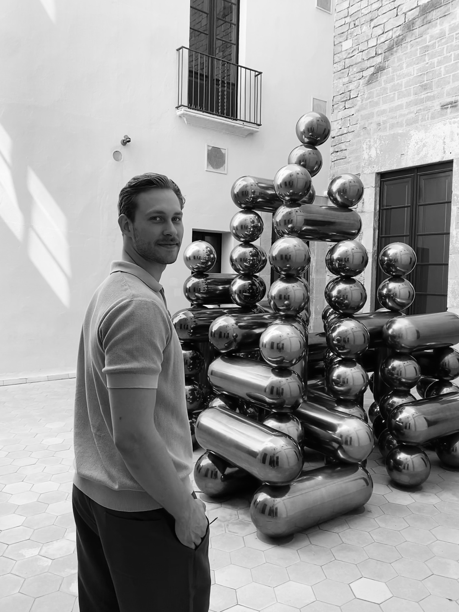

Pascal Ristl

Profile
Ich bin Pascal, gelernter Schreiner und mitten im Innenarchitektur Studium. In meiner Ausbildung habe ich gelernt, methodisch zu arbeiten. Vom ersten Aufmaß bis zum fertigen Stück. Material verstehen, Verbindungen konstruieren, jeden Schritt in der richtigen Reihenfolge durchdenken. Diese Nähe zu Material und Handwerk prägt bis heute, wie ich an jede Gestaltungsaufgabe herangehe.Mit der Zeit wurde mir klar dass ich nicht nur bauen und ausführen möchte. Ich will gestalten.
Seit dem Wintersemester 2025 studiere ich Innenarchitektur an der TH Rosenheim. Das Studium weitet meinen Blick über das Holz hinaus: andere Materialien, die Grundlagen der Baukonstruktion und die Werkzeuge des Entwurfs.
CAD- und Modellierungssoftware, Farbe und Typografie, Komposition, Darstellung und Präsentation.Beide Perspektiven ergänzen sich. Zu wissen, wie etwas gebaut wird, verändert, wie man es entwirft. Präziser, materialgerechter, näher an der Umsetzung. Umgekehrt geben mir die Werkzeuge des Studiums die Möglichkeit, Ideen zu entwickeln, zu prüfen und zu vermitteln, bevor das erste Brett zugeschnitten ist. Dieses Portfolio dokumentiert diesen Weg — vom Detail zum Raum.
Background
- since 2025B.A. Interior Architecture, Rosenheim Technical University (TH Rosenheim)
- 2024-2025Cabinetmaker, SFI Baldinger / Domani — furniture & interior fit-out, fabrication and installation
- 2021-2024Cabinetmaker apprenticeship (journeyman's certificate), SFI Baldinger / Domani
- 2023-2024Advanced training, CAD & CNC specialist
- 2022-2024Management assistant in crafts (master craftsman exam, part 3), HWK Freiburg
- 2014-2024Competitive volleyball, most recently 1. Bundesliga
Contact
- Emailristlp@ristldesignbuero.com
- Instagram@ristl.designbuero ↗
- Based inMünchen, Germany